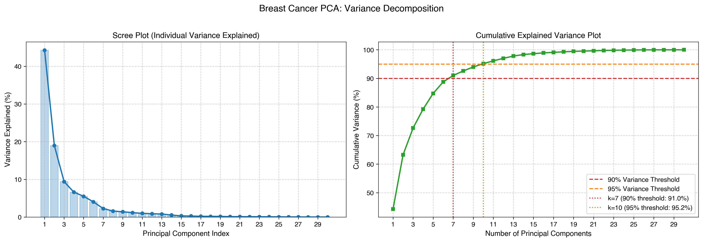
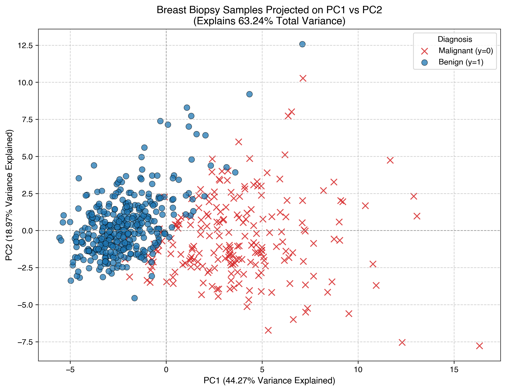
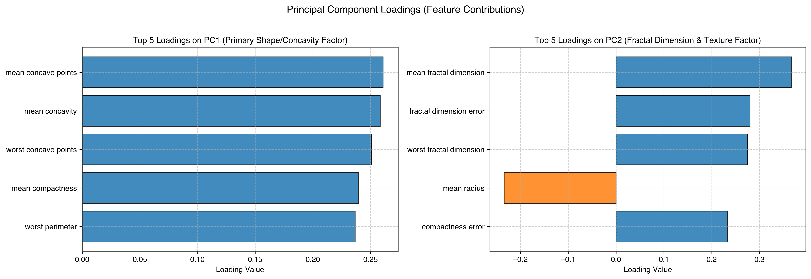
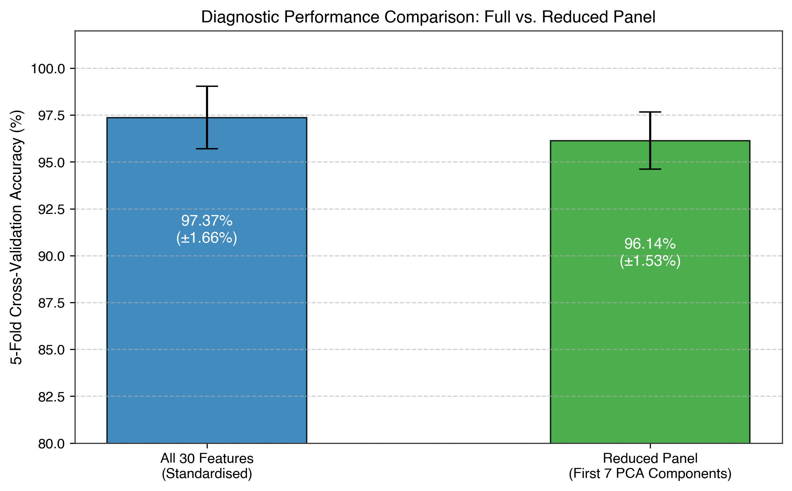

The objective of this practical is to evaluate whether a reduced Principal Component Analysis (PCA) diagnostic panel can replace a full 30-feature cell nucleus biopsy panel without losing the hospital lab's ability to accurately differentiate malignant from benign tumors.
The dataset used is the Breast Cancer Wisconsin Diagnostic Dataset (loaded via sklearn.datasets.load_breast_cancer). It contains 569 biopsy observations (357 benign, 212 malignant) and 30 continuous morphological features describing characteristics of cell nuclei extracted from Fine Needle Aspirates (FNA).
StandardScaler, I rescaled each feature to mean 0 and variance 1, and fitted PCA with all 30 orthogonal components.
Input / Code:
Output:
Input / Code:
Output Plot (Scree & Cumulative Variance):

Output Plot (PC1 vs PC2 Projection):

| Rank | Top 5 on PC1 (Shape / Concavity) | Loading | Top 5 on PC2 (Texture / Fractal Dimension) | Loading |
|---|---|---|---|---|
| 1 | mean concave points | +0.2609 | mean fractal dimension | +0.3666 |
| 2 | mean concavity | +0.2584 | fractal dimension error | +0.2801 |
| 3 | worst concave points | +0.2509 | worst fractal dimension | +0.2753 |
| 4 | mean compactness | +0.2393 | mean radius | -0.2339 |
| 5 | worst perimeter | +0.2366 | compactness error | +0.2327 |
Output Plot (Loadings Bar Chart):

sklearn.pipeline.Pipeline to guarantee zero data leakage:
Output Plot (Model Performance Comparison):

1. Share of Variance & Dominant Feature (Standardised):
After standardising the dataset, I found that **PC1 explains 44.27% of the total variance**. From my loading analysis, the feature with the highest loading on PC1 is mean concave points (loading = +0.2609), followed closely by mean concavity (+0.2584) and worst concave points (+0.2509). I observed that no single feature overwhelmingly dominates; rather, multiple morphological features measuring nuclear concavity, perimeter, and irregularity share balanced contributions (0.23 to 0.26).
2. Contrast with Unstandardised PCA:
When I evaluated the unstandardised PCA, I found that PC1 accounted for 98.20% of the variance and was almost completely dominated by worst area (loading = 0.8521) and mean area (loading = 0.5168), while the other 28 features received loadings close to 0.00.
3. Why Standardisation Changes the Result So Much:
As I studied in statistical theory, PCA seeks orthogonal axes that maximize sample variance: $\text{Var}(w^T X) = w^T \Sigma w$. Without standardisation, features with large physical measurement scales naturally exhibit enormous numerical variances (in this dataset, worst area variance is ≈ 324,165, whereas concavity variance is only ≈ 0.006). Because area has a variance millions of times larger than concavity, unstandardised PCA aligns almost entirely with cell area simply due to units of measurement (μm² vs. dimensionless ratios). By standardising the data ($z$-score scaling), I scaled all feature variances to 1.0, enabling PCA to discover true biological covariation across all 30 indicators rather than measurement artifacts.
Recommendation: Yes, I would recommend the reduced panel ($k = 7$) to the hospital laboratory.
1. Statistical Reason:
In my cross-validation experiments, the reduced panel retains 91.01% of total variance while achieving a 96.14% 5-fold cross-validation accuracy, which is within 1.23% of the full 30-feature baseline (97.37%). Additionally, I observed lower fold-to-fold variance (±1.53% vs. ±1.66%), demonstrating that eliminating high multicollinearity helps protect against overfitting.
2. Practical Reason:
From a practical laboratory standpoint, extracting, segmenting, and performing clinical quality control on 30 individual nuclear biomarkers per patient biopsy is expensive, computationally intensive, and increases the likelihood of measurement noise or assay failure. In my assessment, reducing the panel to 7 combined indicators accelerates biopsy processing, reduces laboratory turnaround time, and lowers test expenses for patients.
3. Loss in Interpretability:
What I lose in this reduction is direct clinical interpretability. Pathologists make clinical decisions using tangible physical measurements (such as "mean nuclear radius exceeds 18 μm"). Because principal components are mathematical linear combinations (weighted sums) of all 30 features, a composite coordinate like "PC1 = +2.48" carries no direct histological or biological meaning under a microscope, making it harder for clinicians to explain specific diagnostic reasoning to patients.